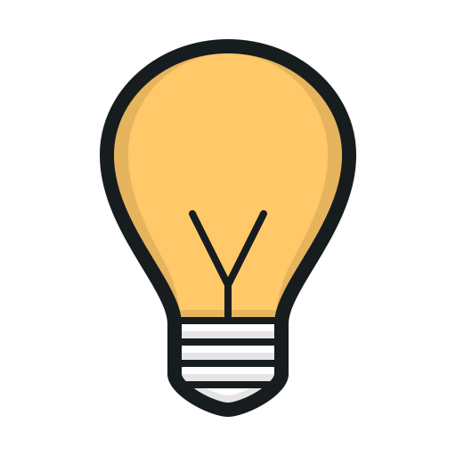
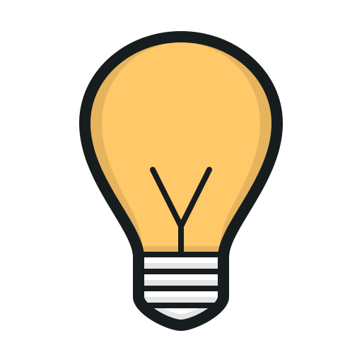

Desde que a luz artificial começou a fazer parte da vida humana, é imensurável o impacto que ela causa no desenvolvimento humano e no comportamento social das pessoas. A luz desempenha um papel essencial, influenciando aspectos físicos e emocionais nas pessoas.
Com o avanço da tecnologia, o poder da luz foi sendo potencializado, possibilitando simular comportamentos por meio da luz artificial, gerando bem-estar. Além disso, é possível também criar cenários e sensações por meio de projetos de iluminação.
No design de interiores, a aplicação de luzes artificiais é elaborada por meio de um projeto luminotécnico, aplicando técnicas para obter um resultado específico. Dessa forma, um projeto luminotécnico é muito mais do que colocar um ponto de luz no teto, ele tem o poder de transformação do espaço.
Observe a iluminação da cúpula do hotel Emirates Palace, em Abu Dhabi:
Figura 1 – Cúpula do hotel Emirates Palace, em Abu Dhabi
Fonte: Hidden (Freepik, 2012)
A imagem é uma fotografia apresentando a cúpula interna do hotel Emirates Palace, em Abu Dhabi. É um ambiente interno de luxo com predomínio da cor amarela, que remete ao ouro. São três andares de mezanino hexagonal com guarda-corpo e elementos de acabamento refinado. No teto há uma cúpula trabalhada com composições lineares e de arcos. Em toda a imagem é perceptível que a aplicação da iluminação promove um impacto visual maior no projeto de interiores, valorizando muito o espaço.
Agora imagine como seria esse ambiente se ele não tivesse uma iluminação tão bem distribuída, que destacasse os elementos arquitetônicos. Provavelmente o impacto visual não seria tão grande, não é mesmo? É o possível dizer que: “Luz é contraste. Tonalidade muda tudo. Posição muda tudo” (NITZSCHE, 2021).
No design de interiores, existe um ramo da profissão que é especializado em desenvolver projetos luminotécnicos?
Clique ou toque para ouvir o conteúdo:
O ramo da profissão que é especializada em desenvolver projetos luminotécnicos chama-se lighting designer ou designer de iluminação. Um lighting designer desempenha o papel de criar soluções de iluminação que atendam às demandas estéticas, funcionais e técnicas de um espaço. Ele emprega habilidades técnicas e criatividade para aprimorar a percepção visual, como destacar características arquitetônicas e proporcionar sensações sensoriais por meio do uso da luz.
Um lighting designer pode ser um profissional de diferentes formações, como engenheiro eletricista, arquiteto ou designer de interiores, que busca certificações e especialização técnica para atuar com propriedade na área. Além da formação acadêmica e da experiência prática, é importante que esse profissional tenha familiaridade com tendências e tecnologias, para usar softwares de design e simulação de iluminação.
O designer de interiores pode atuar profissionalmente como lighting designer, desde que desenvolva os conhecimentos e as habilidades técnicas necessários para exercer esse papel. O design de interiores e a iluminação estão intimamente interligados, de forma que o designer, ao se especializar em projetos de iluminação, pode complementar seu trabalho com excelência.
Um profissional de design de interiores que tenha habilidades em iluminação tem a capacidade de conceber soluções de iluminação eficientes e visualmente atrativas para os ambientes que projeta. Esses profissionais têm a capacidade de considerar a iluminação um componente essencial do projeto, assegurando que ela realce os elementos de design, atenda às exigências funcionais e crie a atmosfera desejada nos espaços.
Observe na imagem a seguir como o projeto de design da cozinha já está interligado com o projeto luminotécnico, o que gera um melhor resultado estético e funcional.
Um designer de iluminação pode prestar serviço para uma ampla variedade de clientes e setores, como empresas, espaços culturais, comerciais, educacionais, entre outros. Inclusive, ele pode prestar serviço para outros designer de interiores e arquitetos, desenvolvendo o projeto luminotécnico de acordo com o projeto de interiores já estabelecido pelo profissional.
Figura 2 – Cozinha com elegante design e projeto de iluminação
Fonte: Vecstock (Freepik, 2023)
A imagem mostra uma cozinha residencial com um design contemporâneo e elegante em tons escuros e amadeirado. O design da cozinha é valorizado por meio de um projeto de iluminação que promove uma sensação de bem-estar e aconchego. Essa sensação é resultado da iluminação indireta e bem distribuída, que foca em elementos do projeto, como mobiliário, arandelas, pendentes e luzes de efeito.
É comum o lighting designer receber o projeto de interiores definido e desenvolver o projeto luminotécnico. Para isso, é importante entender como o trabalho foi elaborado até o momento, a fim de seguir a mesma linguagem e potencializar os resultados.
Para compreender o que iluminar e como iluminar, é realizada uma análise do projeto arquitetônico ou de interiores. Para fazer este mapeamento, utiliza-se uma ferramenta denominada briefing de trabalho luminotécnico.
O briefing luminotécnico é um documento que contém informações e diretrizes essenciais para o desenvolvimento de um projeto de iluminação. Embora o conteúdo específico possa variar dependendo do projeto e do cliente, um briefing de trabalho de um lighting designer geralmente inclui uma série de informações que possibilitam fazer o mapeamento das necessidades do espaço, para que o projeto se destine a que e a quem.
Por ser a etapa inicial do processo de design, deve ser complementado por reuniões, visitas ao local e diálogo com o cliente, a fim de esclarecer e ajustar os detalhes do projeto. O briefing serve como referência e guia para garantir que o lighting designer compreenda as necessidades do cliente e possa desenvolver um projeto de iluminação adequado e satisfatório. Para isso, é necessário seguir algumas etapas de mapeamento, as quais têm uma ordem cronológica.
Para compreender melhor cada uma dessas etapas e sua importância no briefing de trabalho para o desenvolvimento de projetos luminotécnicos, confira a seguir do que trata cada uma delas.
Figura 3 – Profissão de lighting designer
Fonte: Bertelli (Pexels, 2023)
Imagem mostra uma jovem segurando uma lâmpada na mão, representando a profissão de lighting designer.
Na etapa de objetivos e metas, o profissional busca identificar o resultado que se deseja obter no ambiente por meio do projeto de iluminação. É fundamental que se tenha clareza no propósito do espaço, para que o projeto atenda às expectativas do cliente.
Os objetivos e as metas são traçados considerando alguns aspectos, como garantir que a iluminação seja funcional e atenda às necessidades básicas do espaço. Para isso, é preciso identificar as tarefas que serão desempenhadas no recinto, de forma que as atividades consigam ser exercidas com conforto e eficiência.
É importante compreender a atmosfera que se deseja criar, que pode variar entre relaxante ou vibrante, dependendo das preferências do espaço. Além disso, é preciso relacionar a luz com o entorno, de forma a verificar a necessidade de realçar ou disfarçar elementos, como texturas, obras de arte ou componentes estruturais.
Figura 4 – Restaurante com uma atmosfera aconchegante
Fonte: Tang (Pexels, 2020)
A imagem mostra o interior de restaurante moderno com mesas redondas, sofás confortáveis e iluminação indireta.
Dependendo do tipo de espaço ou da necessidade, os objetivos e as metas podem variar muito. Porém, é importante traçá-los para que se obtenha um bom resultado com o projeto de iluminação.
Na etapa de escopo são definidos os parâmetros do projeto a ser realizado, de forma que se obtenha uma definição clara do limite e da extensão dos processos a serem desenvolvidos.
As definições são estabelecidas quando se delimitam os ambientes que serão contemplados pelo projeto luminotécnico. Posteriormente, identificam-se os elementos de iluminação, como os tipos de iluminação, as tecnologias e os equipamentos e a necessidade de integração entre sistemas.
Figura 5 – Definição do escopo por meio de um planejamento de projeto
Fonte: RDNE Stock Project (Pexels, 2021)
A imagem mostra as mãos de profissionais escrevendo em algumas folhas de papel a organização de um projeto.
É nesta etapa que se limita o que está incluso no desenvolvimento do projeto, o que contribui para um planejamento adequado. Um escopo claro e bem definido estabelece expectativas realistas do cliente em relação à entrega do projeto, garantindo um resultado final adequado às necessidades dos usuários em relação ao espaço.
Na etapa de leiaute (ou layout), o projetista determina a composição espacial dos elementos de iluminação, o que ocorre por meio da posição dos pontos de luz e das luminárias, respeitando os objetivos preestabelecidos.
Figura 6 – Representação da fase de leiaute
Fonte: Shkraba (Pexels, 2020)
A imagem mostra as mãos de um profissional que está escrevendo e criando um esboço de projeto por meio de desenhos em folhas de papel.
Neste momento, é necessário certificar-se de que ocorra uma distribuição de luz uniformemente pelo ambiente, evitando pontos de excessiva ou insuficiente iluminação. É possível também aplicar estratégias de projeto que gerem uma integração entre luz artificial e natural, de forma a aproveitar a luz natural e complementar com a artificial, quando necessário.
Os aspectos estéticos de projeto são considerados nesta fase de leiaute, os quais, por meio de planejamento, possibilitam criar efeitos especiais, como direcionamentos de luz, angulação de feixes, brilho e cores variadas.
A definição da disposição espacial dos elementos de iluminação no leiaute deve ser guiada pelas necessidades do espaço e pelas boas práticas de iluminação.
A etapa de dimensionamento refere-se aos cálculos luminotécnicos que possibilitam determinar as grandezas físicas da iluminação. Esse procedimento contabiliza a quantidade de luz necessária para determinada área, atendendo às normas técnicas.
Figura 7 – Representação da fase de dimensionamento
Fonte: Grabowska (Pexels, 2020)
A imagem mostra as mãos de uma profissional realizando alguns cálculos em uma folha de papel com o auxílio de uma calculadora científica e um teclado de computador ao lado.
O dimensionamento considera diversos critérios, entre eles a iluminância, que é a quantidade de luz que incide em uma superfície e é dada em lux. De acordo com a atividade realizada em determinado local, o nível de iluminância pode variar, sendo mais baixa para atividades que exigem pouca atenção e mais alta para ambiente no qual se desenvolvem tarefas de maior precisão. Os valores de iluminância podem ser consultados em normas técnicas que estabelecem os requisitos mínimos de iluminância de acordo com o tipo de ambiente. No Brasil, a norma que rege é a NBR/ISO 8.995 – Iluminação em ambientes de trabalho.
Assim, adicionando informações como área, altura de forro, caraterísticas das luminárias e distribuição desejada, são realizados os cálculos luminotécnicos. Esses cálculos podem ser executados com o uso de ferramentas ou softwares específicos.
A determinação das zonas de iluminação permite adaptar os usos e criar cenários, a fim de resultar em um ambiente funcional, esteticamente agradável e eficiente no consumo de energia elétrica.
A etapa de circuitos ocorre quando o lighting designer desenvolve o planejamento dos circuitos elétricos referente ao projeto luminotécnico, e sua adequada implementação é de suma importância para garantir um fornecimento de energia adequado aos sistemas de iluminação.
A organização do projeto se dá pela representação dos diagramas elétricos e dos layouts de circuitos. Os diagramas elétricos representam a conexão das luminárias com os dispositivos de controle, como interruptores, dímeres (dimmers) ou sistema de automação residencial. Já o layout de circuitos determina o número e a disposição das luminárias em relação aos circuitos elétricos, apresentando a distribuição espacial das luminárias em relação às áreas iluminadas.
Figura 8 – Interruptor representando o circuito elétrico das luminárias em um projeto
Fonte: Castorly Stock (Pexels, 2020)
A imagem mostra um interruptor branco com três teclas na horizontal de uma parede branca.
Em projetos mais complexos e de grande escala, é importante contar com o apoio e a parceria de um engenheiro eletricista, que tem conhecimento técnico para garantir a implementação de um sistema elétrico seguro e de acordo com as conformidades técnicas.
A etapa de definição dos fornecedores é importante para que os produtos escolhidos atendam aos requisitos técnicos, estéticos e de qualidade, por meio de uma seleção de fornecedores de equipamentos, materiais elétricos, lâmpadas e luminárias que comporão o projeto luminotécnico.
Figura 9 – Visão interna de uma loja de luminárias
Fonte: Wells Abbott Showrooms (s. d.)
A imagem mostra o showroom de uma loja de iluminação com diversos modelos de luminárias expostos.
Além de os fornecedores respeitarem as especificações técnicas do projeto, é importante que seus produtos comercializados tenham boa qualidade e reputação. Além disso, é importante que esses fornecedores ofereçam suporte técnico e serviço de pós-venda, de forma que comuniquem a respeito de instalação, manutenção, garantias e disponibilidade no caso da necessidade de reposição de peças.
A comunicação entre o lighting designer e os fornecedores precisa ser clara e direta durante o desenvolvimento do projeto, de forma a fazer escolhas assertivas em relação aos requisitos técnicos e a disponibilidade dos produtos selecionados.
A etapa de orçamento está diretamente relacionada com os fornecedores, pois são estes que oferecem opções que atendam às restrições financeiras estabelecidas. O orçamento disponível no projeto é referente às compras de luminárias e equipamentos luminotécnicos, a fim de garantir equilíbrio entre qualidade, desempenho e custo.
Figura 10 – Representação da etapa de orçamento
Fonte: SHVETS Production (Pexels, 2023)
A imagem mostra uma profissional desenvolvendo um orçamento.
A etapa de especificação delimita os requisitos técnicos dos materiais que compõem o projeto de iluminação, como as luminárias, as lâmpadas e os equipamentos elétricos. É fundamental uma definição detalhada a fim de garantir que as escolhas luminotécnicas atendam com êxito às demandas funcionais, estéticas e de desempenho do sistema.
Figura 11 – Luminária + lâmpada disponível no catálogo de produtos de uma loja virtual
Fonte: Leroy Merlin (c2023)
Foto de um produto (kit duas luminárias pendentes + duas lâmpadas vintage) disponível no site de um fornecedor (Loja Leroy Merlin).
As especificações técnicas devem apresentar as informações a respeito de lâmpadas e fontes de luz, como: o tipo (LED – light emitting diode, ou diodo emissor de luz, halógena, fluorescente, incandescente, entre outras), a eficiência energética, a temperatura de cor (kelvin); o IRC (índice de reprodução de cor), a vida útil, a resistência à umidade (IP), a potência (watts), o fluxo luminoso (lumens), entre outros. As informações técnicas são disponibilizadas nos sites e catálogos de fabricantes e fornecedores, no campo “característica técnica”.
Com a disponibilidade dessas informações, é possível garantir ao cliente as orientações adequadas na aquisição das luminárias, de forma a atender aos requisitos do projeto.
A etapa de desenvolvimento da planta de forro possibilita o planejamento do forro por meio de adequada distribuição das luminárias.
Nesse processo, é necessário que o projetista tenha em mãos as informações métricas espaciais, como altura do forro, elementos estruturais, esquadrias e demais elementos que possam impactar a distribuição das luminárias. A distribuição é apresentada graficamente, por meio de um desenho técnico que demonstra os pontos de instalação das luminárias considerando os aspectos estéticos e funcionais.
Figura 12 – Representação da etapa de planta de forro
Fonte: Grabowska (Pexels, 2020)
A imagem mostra uma projetista sentada em frente ao computador, desenvolvendo um projeto.
No caso de propor um novo forro, por exemplo, é necessário apresentar as especificações técnicas, como material, textura, cor e acabamento. Com o forro é possível ocultar a fiação elétrica eficientemente.
Durante o planejamento do forro, é importante considerar outros elementos que possam estar presentes, como ar-condicionado de teto, sprinklers, caixas de som, detectores de fumaça ou outros elementos de infraestrutura. Nesses casos, é necessário que exista uma compatibilização entre os sistemas.
O desenho técnico contendo as informações da planta de forro é um guia para que as instalações luminotécnicas sejam adequadas, harmoniosas e eficientes.
A etapa de apresentação representa a comunicação entre a proposta de projeto do lighting designer e o cliente, sendo um momento importante para compartilhar ideias, discutir informações e alinhar expectativas.
Figura 13 – Representação da etapa de apresentação
Fonte: Kindel Media (Pexels, 2021)
A imagem mostra duas pessoas sentadas frente a frente a uma mesa redonda, conversando, como se estivessem fazendo uma reunião. É um ambiente profissional e agradável com decoração (tapete, pufes, televisão, luminárias e potes com vegetação).
Geralmente a apresentação do projeto ocorre em uma reunião com o cliente, na qual se contextualiza o projeto em relação ao espaço, à finalidade e aos objetivos já estabelecidos. Primeiramente, são mencionados o conceito, a inspiração e a ideia central do projeto luminotécnico, que pode estar relacionada a um determinado estilo de design ou a uma característica espacial.
Ao descrever as soluções propostas, o projetista pode usar diagramas, plantas e layouts que representam a distribuição do sistema luminotécnico, como pontos de luz, áreas de destaque, planta de forro e efeitos de iluminação. Para complementar as informações, o lighting designer pode exibir a maquete eletrônica 3D, que, por meio de imagens realistas, ajudam o cliente a compreender a distribuição da luz, os efeitos criados e a atmosfera resultante.
A partir disso, o cliente pode dar os feedbacks a fim de discutir os resultados para o processo de ajustes e refinamento do projeto, a fim de avançar para a entrega final.
O objetivo da apresentação é transmitir de maneira clara e atrativa ao cliente o design de iluminação. A colaboração e a comunicação efetiva entre cliente e profissional são cruciais para atender aos requisitos do projeto com sucesso.
A etapa de memorial descritivo é o registro formal das especificações técnicas do projeto luminotécnico, a fim de orientar os profissionais envolvidos para que a proposta projetual seja executada corretamente.
Este documento apresenta todas informações referentes ao projeto luminotécnico, como o objetivo e a descrição do espaço, a distribuição e os tipos de luminárias, os cálculos luminotécnicos, as especificações técnicas, os desenhos técnicos e as recomendações.
Figura 14 – Representação da fase de memorial
Fonte: Kosuki (Pexels, 2020)
A imagem mostra um profissional com roupa formal e crachá, segurando uma pasta com algumas folhas dentro (representa o memorial descritivo).
Por meio de um memorial descritivo, é possível fornecer ao cliente as informações detalhadas do projeto, garantindo a compreensão e implementação do projeto proposto pelo lighting designer.
Um bom projeto luminotécnico faz toda a diferença no resultado final de um projeto de interiores, não é mesmo?
Uma iluminação adequada possibilita que os usuários desfrutem o ambiente de diferentes maneiras, criando uma atmosfera específica, que pode reforçar o que aquele espaço deseja transmitir.
A iluminação também tem o poder de influenciar como ocorre a interação entre as pessoas e o ambiente projetado, impactando o comportamento, a convivência, as experiências e o bem-estar delas.
Assim, um lighting designer pode agregar valor ao projeto de interiores como um todo, pois, por meio de toda sua expertise em iluminação, ele pode contribuir muito para a criação de espaços funcionais, confortáveis, com boa estética e eficiência energética.
Caso você queira se aprofundar mais neste assunto, a dica é o livro Aprender a Ver – A Essência do Design da Iluminação, de Howard Brandston (traduzido por Paulo Scarazzato).


 
